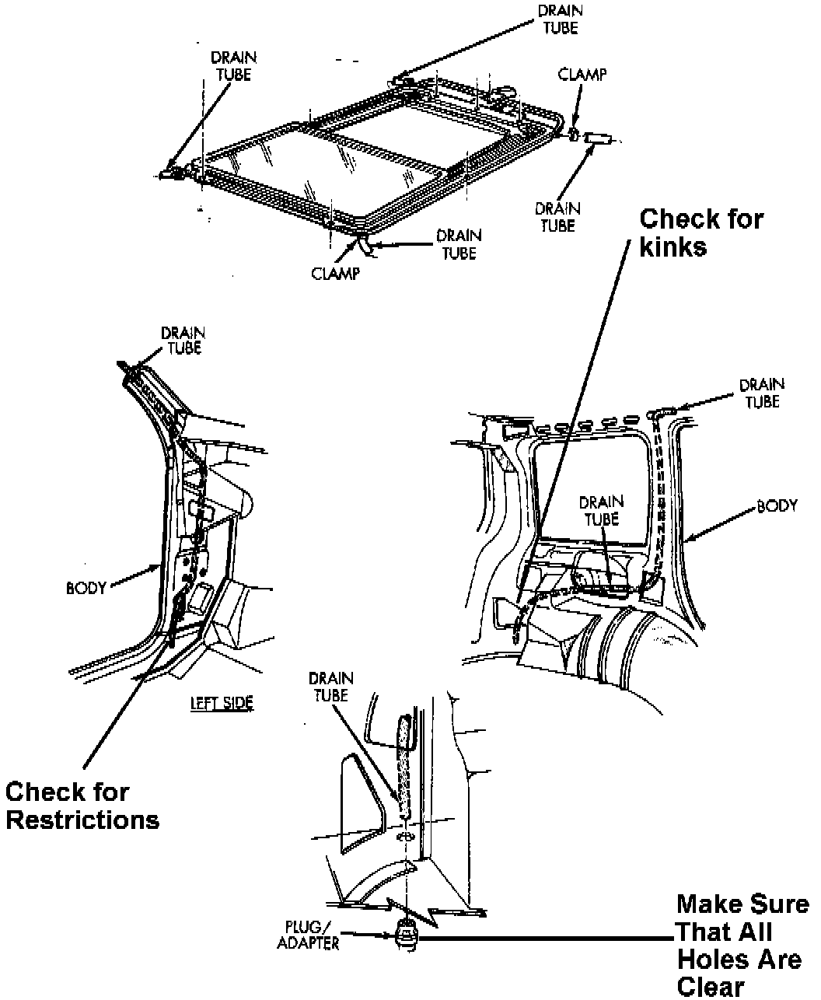

Roof/Sun Roof - Water Leaks
NO: 23-14-97GROUP: Body
DATE: Apr. 4, 1997
SUBJECT:
Roof/Sun Roof Water Leaks
MODELS:
1996 - 1997 (ZJ) Grand Cherokee
DISCUSSION:
Water leaks may be present causing wet carpets or water spilling from the headliner during turns or while braking. Water leaks in the roof area may be difficult to diagnose. The sun roof contains a drip trough designed to catch any water leaking from around the sun roof opening and drain it out any of four drain tubes located in the body. These tubes are routed through interior body panels and are not easily accessible. Water testing may not reveal the location of the leaks if they are performed on a level surface such as a garage floor. If one or more of the drain tubes are restricted, water will drain out the remaining tubes if the vehicle is on a level surface. The problem occurs when the vehicle is parked on an incline. If a tube on one end of the vehicle is plugged and the vehicle is parked with the other end even a few inches higher, water will over flow the trough and spill onto the headliner. The headliner will retain the water, or it will run down one of the sides and enter the passengers' compartment.
^ The front drain tubes are routed in the rocker panel area and the rear tubes are routed into the quarter panel area behind the wheel wells. All four tubes must be clear of any restrictions. Water can be poured into the trough with the headliner in place. Pour water into the trough and observe the under body for water to be draining out of all four locations. The absence of water in any location may indicate that one of the drain tubes is kinked or plugged.
^ Make sure that there are no leaks where the drain tube connects to metal tubes on the trough.
^ Check the roof rack screws. They should have a pre-applied thread sealer on them. If no sealer is present, apply MOPAR Lock & Seal or equivalent to the threads. If no sealer is present, a slow leak can be present and water can drip directly on the headliner.

^ Inspect the rear drain tube adapter in the quarter panel. This is a dual purpose adaptor. It serves as the exit point for the drain tube and as the drain for the quarter panel. Make sure that the drain is open and that the drain holes for the quarter panel are not covered by the tube or by grease used in the installation.
POLICY: Information Only